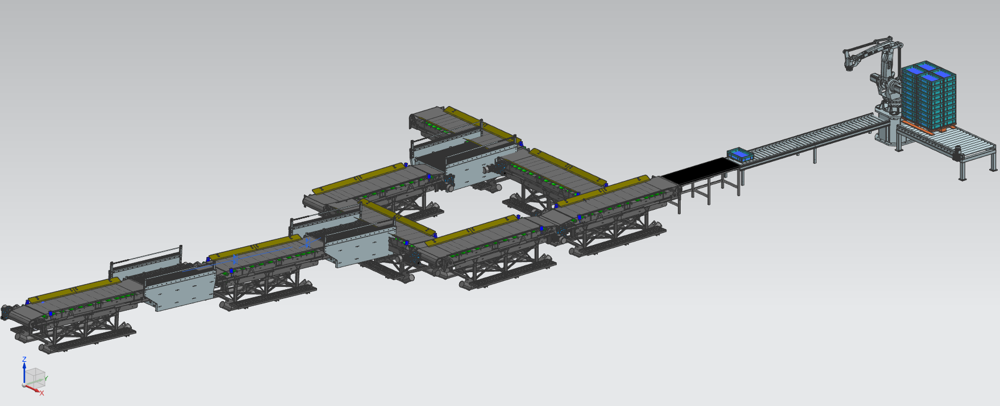

Digital Factory
Como otro de los objetivos del proyecto se planteó la construcción de un Gemelo Digital de la línea de manufactura que implementara las máquinas, sensores, actuadores y demás componentes que serían necesarios para la puesta en marcha del proceso. Los objetivos de esto fueron, por un lado, aprender y utilizar las herramientas que se utilizan en industria para hacer comisionamiento virtual de fábrica, y por otro, aprovechar las bondades de la simulación para llevar a cabo una componente práctica de aprendizaje en el camino de la automatización, de manera que se aterrizara la propuesta de automatización. El resultado fue un montaje de componentes obtenidos en CAD que se configuró y simuló en el software Siemens NX.
Selección de archivos CAD

Conveyor Belt
El proceso que conlleva el limon y el aguacate requiere en varios puntos de bandas transportadoras que lleven el producto a traves de una etapa y/o hasta la etapa siguiente.
Roller conveyor para canastas
Se seleccionó una transportadora de rodillos para el movimiento de las canastas desde la zona de empacado hasta la celda de paletizado. Las canastas son transportadas en fila.
Roller conveyor para palets
La salida de los palets llenos de canastas es llevada a cabo por otra transportadora de rodillos. Para este caso, debe ser más ancha. Se seleccionó la que se muestra en la imagen
Canastilla plastica
Para ambos procesos (el limon y el aguacate) se seleccionó la misma canastilla plastica de 40x20x13 cm para realizar el emcado final y el palletizado.
Workstation
Por simplicidad en la obtención de las geometrías CAD, se utilizó la estrategia de implementar una geometría estándar para las máquinas de lavado, encerado y singulado para la simulación. Esta geometría es la que se presenta, que corresponde a una estación de trabajo para mecanizado CNC, pero que da la apariencia de una estación en la que hay flujo de material y procesamiento del mismo
Robot IRB460
Este robot esta diseñado para aplicaciones de paletizado y posee las siguientes caracteristicas:
- Capacidad de carga = 110 kg
- Alcance horizontal = 2.4 m
Dado que la simulación del movimiento del robot ya se realizó con la celda de RobotStudio, el modelo del robot se coloca en la fabrica digital como un sumidero de canastas, fuente de palets completos y sensor para transmitir la señal al sistema.
Se utilizaron más geometrías. Particularmente la del Palet Europeo se consiguió tal cual con sus dimensiones, y para las frutas (limones y aguacates) se utilizó el modelado de esferas de 35 mm de diámetro.
Montaje de la fábrica
La planta se montó con los objetos CAD descritos arriba. Se utilizaron varias workstation para simular las máquinas de lavado, encerado y singulado; también se planteó una configuración de bifurcación con las bandas transportadoras, de manera que una vía sea la de los limones, y la otra sea la de los aguacates. En particular, la vía de los limones es aquella que lleva a la máquina enceradora. Para el montaje se utilizó el software Siemens NX en el modo de Mechatronics Concept Designer.
Los objetos fijos se modelaron como cuerpos de colisión, en los cuales influye la geometría que tengan pero no tiene efecto la gravedad. Por ejemplo, las bandas transportadoras, los workstations y el robot son sólo cuerpos de solución. Por su parte, las frutas, las canastas y los palets, además de ser cuerpos de colisión, son también cuerpos rígidos, de manera que la gravedad sí tiene efecto en ellos.
Simulación
Se realizó la simulación del sistema utilizando los siguientes aspectos:
- Velocidad en la superficie de las bandas transportadoras y los workstations
- Fuente de frutas al inicio de la planta. Se generan frutas cada determinado tiempo
- Sumidero de frutas en la mesa de empacado y fuente de canastas en la misma. Ello se hizo con el objetivo de simular la acción de empacado que realizan los operarios.
- Sumidero de canastas en el robot. Esto emula la entrada de canastas a la celda robotizada de paletizado
- Fuente de palets llenos en el robot. También emula la acción de la celda robotizada, en este caso para la salida de palets completados